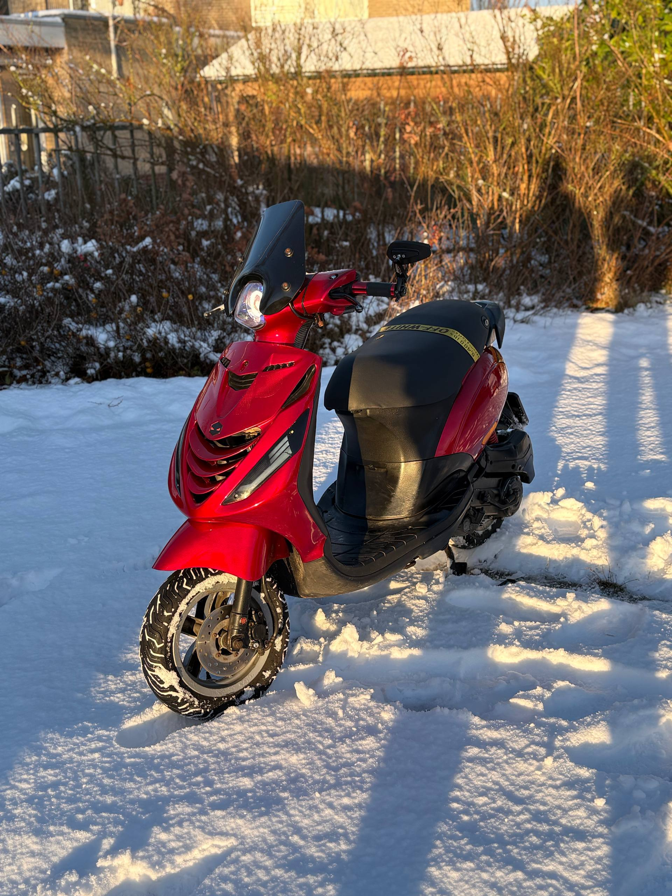
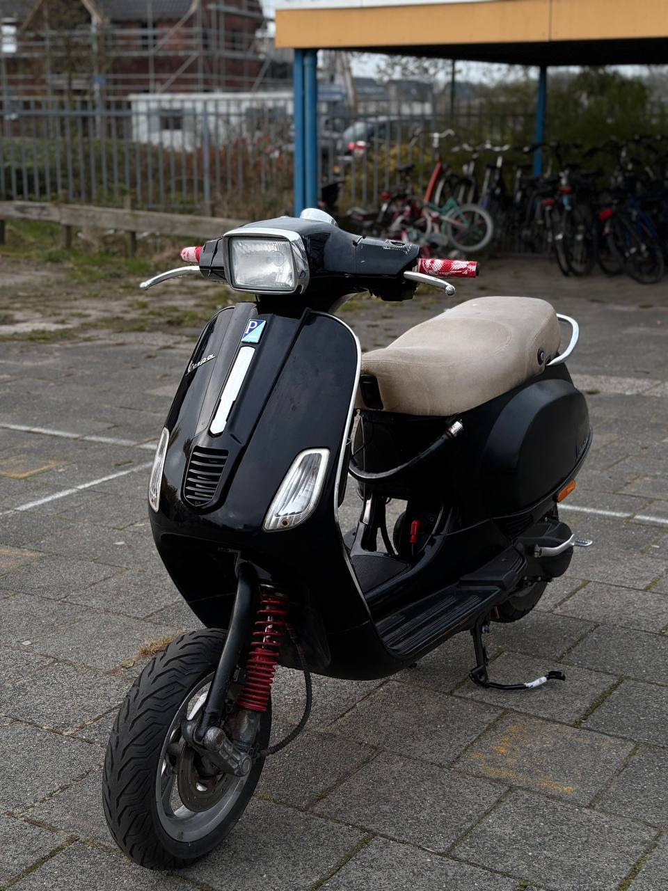
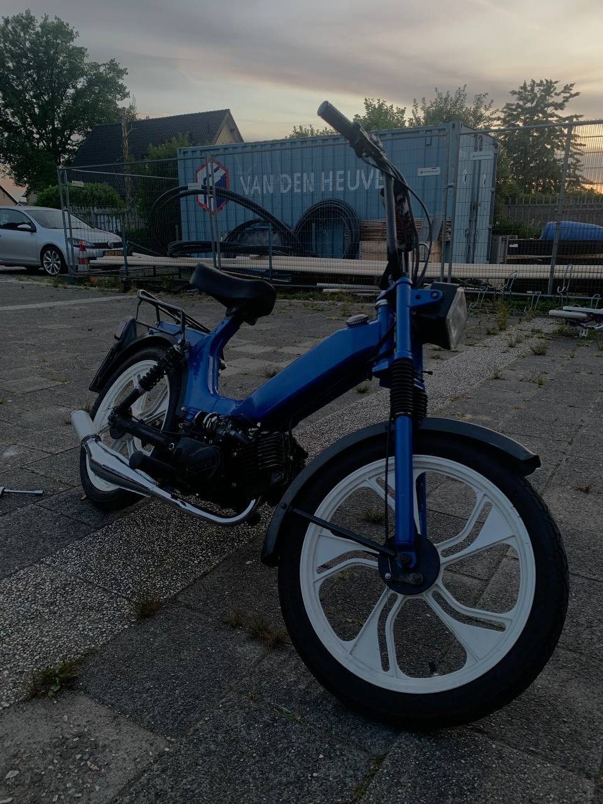

About TSJ
What We Do
Future Plans
Scooter Identity
About TSJ
What We Do
Future Plans
Scooter Identity
Projects archive
Real scooters, sharper presentation, stronger brand energy.
This page pushes TSJ closer to a performance-brand website: clearer sections, more visual hierarchy, and a dedicated space for featured machines.
Featured projects
Built like a small crew. Presented like a serious name.
Your scooter photos are now treated more like editorial hero visuals, with stronger overlays, depth, and framing.


Project directions
How the builds can evolve next.
Before / After Stories
Show each scooter before restoration and after the final setup to make the transformation feel bigger.
Parts Highlights
Add separate sections for wheels, bars, lights, suspension, and other visual or performance upgrades.
Build Sheets
Give each scooter its own page later with parts list, style notes, and upgrade direction.
TSJ Signature Packs
Create branded setup packages like Luxury Street, Daily Weapon, or Stealth Performance.